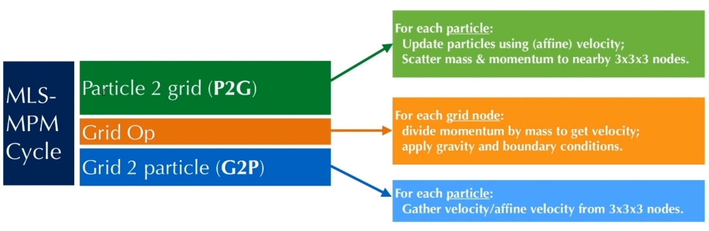
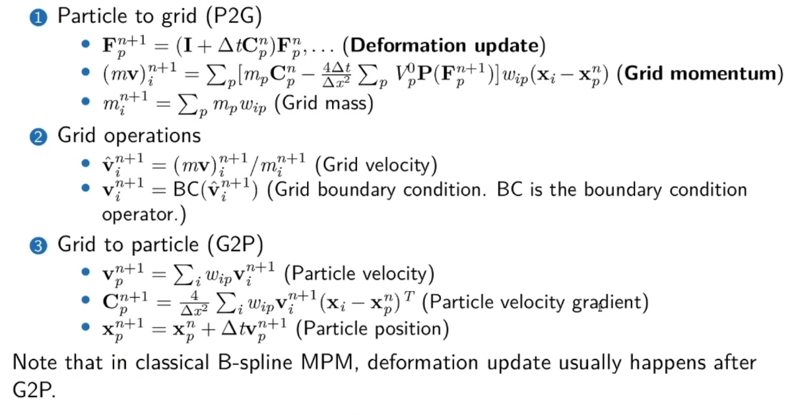
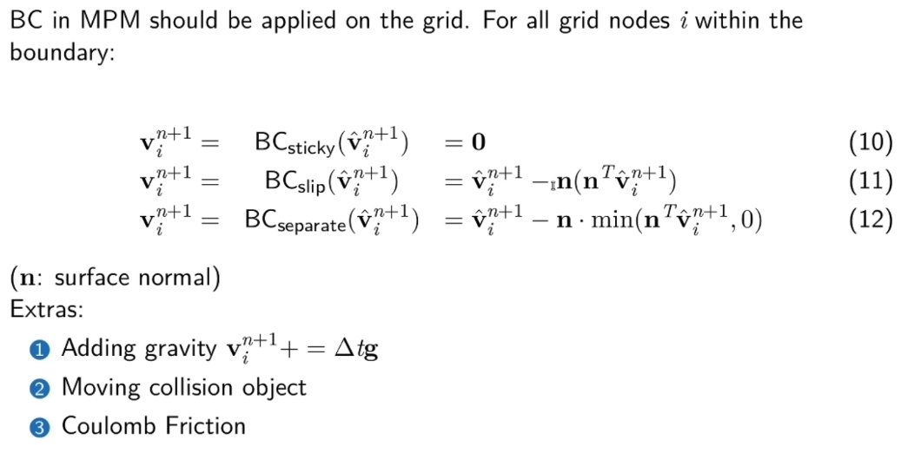

MLS-MPM 移动最小二乘物质点法

Use MLS shape function in MPM

传统MPM将物体离散为携带各类拉格朗日量的粒子，包括位置 \( \mathbf{x}_p \)、速度 \( \mathbf{v}_p \) 和变形梯度 \( \mathbf{F}_p \)。随后通过粒子到欧拉网格的传递操作与网格到粒子的传递操作更新粒子状态。
在该方法中，在时间步 \( t^n \) 到 \( t^{n+1} \) 的更新过程中，使用 \( \nabla N_i(\mathbf{x}_p) \)（三维二次B样条核函数需迭代27次）计算网格动量，其中 \( N_i(\mathbf{x}_p) \) 是在第 \( i \) 个网格上定义、并于粒子位置 \( \mathbf{x}_p \) 处取值的B样条核函数。
如果场景包含上万个点，使用传统MPM方法模拟这些点将非常耗时。而MLS-MPM相较于传统MPM，加速模拟的同时，显著降低了计算成本。
作为一种混合欧拉-拉格朗日方法，它通过以下方程更新网格动量：
P2G
$$ \frac{m_i^{n+1} \hat{\mathbf{v}}_i^{n+1} - m_i^n \mathbf{v}_i^n}{\Delta t} = m_i^n \mathbf{g} + \mathbf{f}_i^n, $$
其中，\( m_i^n \) 是第 \( i \) 个网格的质量，\( \mathbf{v}_i^n \) 是第 \( i \) 个网格的速度，\( \mathbf{g} \) 为重力加速度，\( \Delta t \) 是时间步长。此外：
$$ \mathbf{f}_i^n = -\frac{\partial E}{\partial \mathbf{x}_i} = -\sum_p N_i(\mathbf{x}_p^n) V_p^0 \mathbf{W}_p^{-1} \frac{\partial \Psi}{\partial \mathbf{F}}(\mathbf{F}_p^n) \mathbf{F}_p^{nT} (\mathbf{x}_i^n - \mathbf{x}_p^n), $$
\(f_{ip}\) 为 particle \(p\) 对结点 \(i\) 的力的贡献
这里 \( i \) 与 \( p \) 分别表示欧拉网格场与拉格朗日粒子场。
$$ E = \sum_p V_p^0 \Psi_p(\mathbf{F}_p) $$
\(E\) 表示系统整体的强性势能。
其中 \( V_p^0 \) 为粒子初始体积，\( \Psi_p \) 是能量密度函数；\( \mathbf{W}_p \) 是 \( \mathbf{x}_p \) 的矩矩阵，对于二次 \( N_i(x) \) 有 \( \mathbf{W}_p = \frac{1}{4} \Delta x^2 \)，对于三次核函数则为 \( \frac{1}{3} \Delta x^2 \)；\( \mathbf{F}_p \) 是从拉格朗日视角观察的粒子变形梯度(Defor mation gradients)，通过 \( \mathbf{F}_p^{n+1} = (\mathbf{I} + \Delta t \mathbf{C}_p^{n+1}) \mathbf{F}_p^n \) 更新，其中 \( \mathbf{C}_p^{n+1} \) 是粒子 \( p \) 的仿射矩阵，是 \(\nabla\nu \) 的近似。
\( \mathbf{F}_p \) 会变化是因为欧拉视角下局部速度场的梯度 (\(\nabla\nu \)) 不为0。
🔎 Yuanming Hu, Yu Fang, Ziheng Ge, Ziyin Qu, Yixin Zhu, Andre Pradhana, and Chenfanfu Jiang. 2018. A moving least squares material point method with displacement discontinuity and two-way rigid body coupling.
Grid 操作：边界条件

本文出自CaterpillarStudyGroup，转载请注明出处。
https://caterpillarstudygroup.github.io/GAMES103_mdbook/